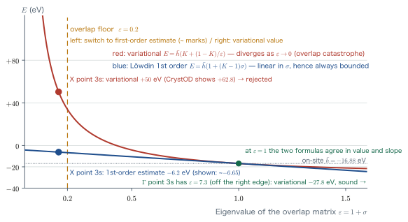
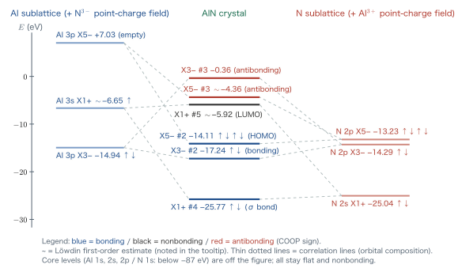

Appendix CA Thorough Guide to CrystOD — What Does crystod --diagram Compute?
In Chapter 14 of the main text, we arrived at the picture that “energy levels become bands in a solid.” There, taking NaCl as an example, we explained why Cl-3p becomes the valence band and Na-3s becomes the conduction band by adding up the ionization energy, the electron affinity, and the Madelung energy. This appendix is the sequel. The tool that answers the same question quantitatively at each k point, using symmetry (Chapter 12) and the secular equation (Chapter 11) is the central function of CrystOD, crystod --diagram, that is, the crystal-orbital diagram (COD). Taking rock-salt AlN as a concrete example, we explain step by step everything that happens behind a single command, from reading the input file to the meaning of every single line in the output HTML. All the mathematics we use has been prepared in the main text: overlap integrals of STOs (Chapter 5), the variational principle and the secular equation (Chapters 3 and 11), point groups and irreducible representations (Chapter 12), and the Madelung field (Chapter 13). The only new ingredient is a single viewpoint, the “eigenvalues of the overlap matrix,” and once this is understood, everything from why the energies of some levels carry a tilde (~) (the Löwdin first-order estimate) to why the extended Hückel method suffers from a chronic ailment called the “overlap catastrophe” can be understood as one continuous story.
- The complete sequence of processing carried out by
crystod --diagram -c POSCAR_AlN_Fm-3m --co-left Al --co-right N - The idea behind the crystal-orbital diagram (COD): split the crystal into two sublattices, and draw “before bonding” and “after bonding” side by side
- The Bloch sum (the “$N$-atom version” of the $\pm$ bonding of a diatomic molecule from Chapter 11) and why the diagonal of the overlap matrix $S(\kk)$ is no longer 1
- The Wolfsberg–Helmholz approximation (extended Hückel method): $H_{ij}=K\,S_{ij}(\hb_i+\hb_j)/2$, $K=1.75$
- The generalized eigenvalue problem and canonical orthogonalization. The denominator $1\pm S$ in $\varepsilon_\pm=(\alpha\pm\beta)/(1\pm S)$ for a diatomic molecule is in fact an eigenvalue of the overlap matrix
- overlap catastrophe: the chronic ailment that the extended Hückel energy diverges when an eigenvalue of the overlap matrix tends to zero, $\varepsilon\to 0$. We understand it as the limit of the statement in Chapter 11 that “the antibonding orbital is raised by more than the bonding orbital is lowered”
- Löwdin first-order estimate: the derivation and range of applicability of the first-order approximation $E=\hb\,(1+(K-1)\sigma)$ that avoids the divergence. The meaning of the energies with a tilde (~) in the terminal output and of the note in the tooltip
- How electrons are filled in (aufbau), HOMO/LUMO, and the color coding of bonding, nonbonding, and antibonding by COOP (crystal orbital overlap population)
- Reading all the levels actually obtained at the X point of AlN
C.1 What Is a Crystal-Orbital Diagram? — The Big Picture of the Command and Its Output
C.1.1 The crystal version of the molecular orbital diagram
At the end of Chapter 12, we drew the molecular orbital diagram of CH$_4$. The atomic orbitals of C are placed on the left and the symmetry-adapted linear combinations (SALCs) of H$_4$ on the right; only those belonging to the same irreducible representation mix, and bonding and antibonding molecular orbitals form in the middle. That is the figure we mean. Just by looking at it, a chemist can see at a glance which orbital joins hands with which, how far the electrons fill, and where the vacancies are.
The motivation for the crystal-orbital diagram (COD) is to draw the same kind of figure for a crystal. For rock-salt AlN, we place the electronic states of the “Al-only lattice” on the left, those of the “N-only lattice” on the right, and draw those of the “AlN crystal” in the middle. The rule connecting left and right is exactly the same as for molecules: only states of the same irreducible representation mix. There is just one difference. Because a crystal has translational symmetry, this figure exists once for each value of the wave vector $\kk$.
Definition: Crystal-orbital diagram (COD)
A level-correlation diagram in which a crystal is divided into two fragment sublattices and, at each $\kk$ point, (i) the electronic levels of the left sublattice alone, (ii) the electronic levels of the right sublattice alone, and (iii) the electronic levels of the whole crystal are arranged side by side with irreducible-representation labels. (i) and (ii) correspond to “before the chemical bond is formed” and (iii) to “after it is formed,” and the correlation lines connecting them show “which orbital bonded with which.”
Supplement: The “atomic-orbital” columns on both outer sides (added in v0.3.7)
After this appendix was written, a column of isolated-atom shells (example: 2Al 3s, where the number is the number of equivalent atoms in the primitive cell) was added on both outer sides of the diagram. Each shell shows its on-site energy $\hb$ including the ligand field (independent of $\kk$), and the correlation lines from it to the sublattice columns show “how the Bloch bonding among equivalent atoms splits each shell.” This is the crystal version of the H$_4$ column of crystod-mol (the display in which the four H 1s orbitals split into a$_1$ + t$_2$). In wurtzite AlN, where the primitive cell contains two or more atoms of the same element, this splitting lets us read off directly how the bonding combination of Al-3p comes below the antibonding combination of Al-3s. In rock-salt AlN (one Al per cell), the single Bloch sum for each shell connects directly to the sublattice column. Figure C.5 in this appendix draws only the central three columns.
The corresponding column in the --pyscf version is obtained by separately computing the isolated ions with formal charges (Al$^{3+}$, N$^{3-}$, etc.) with the same basis, pseudopotential, and functional as the crystal. If you specify --oxidation Al=0 N=0, the calculation can also be done with the neutral-atom sublattices, the same as in the extended Hückel version (sublattices with an odd number of electrons are solved with fractional occupation via Fermi smearing, and for isolated atoms the spin with matching parity is scanned and the ground state is chosen; neutral N is the $^4$S state with spin 3, following Hund's rule). One caution is in order here. Among the shells emptied by the formal charge, those above the lowest empty state of each $l$ (the 4s/4p of Al$^{3+}$, etc.; occupied semicore shells are not counted, and for Na$^{+}$ the 3s above the 2s is the “lowest empty state,” which is reliable) are not physical Rydberg levels but virtual levels of the finite basis. Because the default gth-dzvp-molopt-sr basis is optimized for valence electrons in condensed phases and has no diffuse functions, these levels are “leftovers” of the contraction (compact functions with nodes), and both their energies and the s/p ordering are artifacts of the basis (indeed, for Al$^{3+}$ the 4p comes out below the 4s; this is a reversal resulting from the 4s being off by +7 eV and the 4p by +1.5 eV when compared with the NIST free-ion spectrum, and with the same pseudopotential but --basis gth-qzv2p, both fall within ±0.1 eV of the experimental values. However, these figures were verified for the one-electron problem of the bare ion; for the Kohn–Sham virtual levels of an ion that retains electrons, errors of the eV order due to the functional remain regardless of the basis). For anions the situation is more fundamental: a free anion with one more electron attached is unbound in vacuum, so all the empty levels are continuum states discretized by the basis and cannot become physical levels with any basis (what binds the anion in the crystal is the Madelung potential). From v0.3.7 onward, the tooltip of the relevant level, the footnote of the page, and the terminal output state this caution and the recommended basis.
C.1.2 The command to run and its output
The concrete example we follow in this appendix is the following.
$ conda create -n crystod python=3.11
$ conda activate crystod
$ pip install crystod
$ crystod --diagram -c POSCAR_AlN_Fm-3m --co-left Al --co-right N
# NOTE : POSCAR_AlN_Fm-3m is given below:
$ cat POSCAR_AlN_Fm-3m
$ Al4 N4
$ 1.00000000000000
$ 4.0443663777730645 0.0000000000000000 0.0000000000000000
$ 0.0000000000000000 4.0443663777730645 0.0000000000000000
$ 0.0000000000000000 0.0000000000000000 4.0443663777730645
$ Al N
$ 4 4
$ Direct
$ 0.0000000000000000 0.0000000000000000 0.0000000000000000
$ 0.5000000000000000 0.5000000000000000 0.0000000000000000
$ 0.5000000000000000 0.0000000000000000 0.5000000000000000
$ 0.0000000000000000 0.5000000000000000 0.5000000000000000
$ 0.0000000000000000 0.0000000000000000 0.5000000000000000
$ 0.5000000000000000 0.0000000000000000 0.0000000000000000
$ 0.0000000000000000 0.5000000000000000 0.0000000000000000
$ 0.5000000000000000 0.5000000000000000 0.5000000000000000
After a few tens of seconds, a level table for each $\kk$ point scrolls by in the terminal, and an interactive figure named CrystOD_POSCAR_AlN_Fm-3m.html is written out. Let us look right away at the X-point part of the terminal output (being able to read this table line by line is the goal of this appendix).
* k point X (1/2,0,1/2) *
(4 near-dependent diffuse Bloch combination(s) below overlap floor 0.2:
energies marked ~ are first-order Loewdin estimates; ...)
Al : Al 1s X1+ (-1590.88), Al 2s X1+ (-133.04), Al 2p X5- (-87.40),
Al 2p X3- (-87.40), Al 3p X3- (-14.94), Al 3s X1+ (~-6.65),
Al 3p X5- (7.03)
N : N 1s X1+ (-425.05), N 2s X1+ (-25.04), N 2p X3- (-14.29),
N 2p X5- (-13.23)
crystal :
X1+ #1 -1590.91 eV x1 2e Al 1s X1+ 100.0%
X1+ #2 -424.91 eV x1 2e N 1s X1+ 99.9%
X1+ #3 -133.16 eV x1 2e Al 2s X1+ 98.8%
X3- #1 -87.40 eV x1 2e Al 2p X3- 99.9%
X5- #1 -87.39 eV x2 4e Al 2p X5- 99.8%
X1+ #4 -25.77 eV x1 2e N 2s X1+ 92.1% Al 3s X1+ 7.9%
X3- #2 -17.24 eV x1 2e Al 3p X3- 58.7% N 2p X3- 41.2%
X5- #2 -14.11 eV x2 4e N 2p X5- 84.9% Al 3p X5- 15.1%
X1+ #5 ~-5.92 eV x1 Al 3s X1+ 90.9% N 2s X1+ 7.8%
X5- #3 ~-4.36 eV x2 Al 3p X5- 84.8% N 2p X5- 15.0%
X3- #3 -0.36 eV x1 N 2p X3- 58.8% Al 3p X3- 41.2%
Terminal output at the X point of AlN (abridged). The levels whose energies carry a ~ are the “Löwdin first-order estimate,” one of the stars of this appendix.
The overall flow of the processing is shown in Figure C.1. The following sections follow this flowchart from top to bottom.
crystod --diagram. The region around the “eigenvalue $\varepsilon$ of the overlap matrix” in steps ⑦–⑧ (the orange box) is the climax of this appendix.Supplement: This figure is not a “first-principles calculation”
The COD energies do not come from a self-consistent calculation like the PySCF calculations used in Chapter 10; they are semiempirical values that come out of symmetry + exact overlap integrals + empirical parameters (the extended Hückel method). The aim is not to produce accurate eigenvalues but to draw the skeleton of the chemical bonding—“which orbitals mix, under which symmetry, and in which direction”—in the same style as a hand-drawn diagram, yet without leaving anything out. If quantitative results are needed, CrystOD also provides a --pyscf mode that draws the same diagram using periodic-system DFT in PySCF, but this appendix does not cover it.
C.2 Step 1: Reading the Crystal Structure — The Primitive Cell and the Space Group
The input file POSCAR_AlN_Fm-3m is a structure file in VASP format; a cube (the conventional unit cell) of edge $a = 4.044$ Å contains 4 Al atoms and 4 N atoms, 8 atoms in total. When we run the program, it first prints the following.
### Inputed cell was converted into primitive cell. ###
* Space group *
Fm-3m (225)
The rock-salt structure is a face-centered cubic (fcc) lattice, so once translational symmetry is taken into account, there is only one independent Al atom and one independent N atom. CrystOD detects the symmetry with spglib and converts the 8-atom conventional cell into a 2-atom primitive cell before computing. The primitive translation vectors are
$$ \bm{a}_1=\frac{a}{2}(0,1,1),\quad \bm{a}_2=\frac{a}{2}(1,0,1),\quad \bm{a}_3=\frac{a}{2}(1,1,0) $$with Al at the origin and N at $(\bm{a}_1+\bm{a}_2+\bm{a}_3)/2$. Let us note two distances that will matter later.
- Al–N nearest-neighbor distance: $a/2 = 2.022$ Å (6-coordinate octahedron)
- Al–Al nearest-neighbor distance: $a/\sqrt{2} = 2.860$ Å, coordination number 12 (fcc sublattice)
Physical Insight: Why reduce to the primitive cell?
Bloch's theorem (§C.5) is a theorem about the “primitive translations,” so if the calculation is done in the conventional cell, the same bands appear folded and duplicated four times. In the primitive cell there is just one independent Al atom and one independent N atom, the number of basis functions is minimal, and the diagram is easiest to read. The first line of the output, “converted into primitive cell,” announces this conversion.
C.3 Step 2: Splitting the Crystal into Two Sublattices — Basis Functions and VSIPs
C.3.1 --co-left and --co-right
The option --co-left Al --co-right N specifies that “the left column of the diagram is the Al sublattice and the right column is the N sublattice.” The rule is that every atom in the chemical formula is assigned to either the left or the right; for SrTiO$_3$, several elements can also be grouped together, as in --co-left SrTi --co-right O3.
The terminal prints the following.
* Fragments (full-electron basis: core + valence shells; ...) *
left Al : Al 1s 2s 2p 3s 3p x1 site(s), 13 electrons
right N : N 1s 2s 2p x1 site(s), 7 electrons
electrons per cell in the diagram: 20
Please note the term full-electron basis. Not only the valence 3s and 3p shells but all shells, including core shells such as 1s and 2p, are included in the basis. Core shells hardly hybridize, but by appearing in the level diagram as “flat lines that stay fixed at deep energies,” they serve as markers of the absolute energy scale (corresponding to the core levels of XPS). The number of electrons is the sum over the neutral atoms, $13+7=20$ per primitive cell.
C.3.2 Basis functions: Slater-type orbitals and VSIPs
For the radial function of each shell we use the Slater-type orbital (STO) $R(r)\propto r^{n-1}e^{-\zeta r}$ introduced in Chapter 5. We then assign to each shell an “energy within the atom,” the VSIP (valence state ionization potential) $h$. These are empirical values determined from spectroscopic data and the like, taken as they are from the traditional parameter table of the extended Hückel method (the table of YAeHMOP). The values used for AlN are listed in Table C.1.
| Shell | $h$ (eV) | $\zeta$ (bohr$^{-1}$) | Number of electrons | Role |
|---|---|---|---|---|
| Al 1s | $-1590.98$ | 12.70 | 2 | Core (fixed marker) |
| Al 2s | $-133.35$ | 4.43 | 2 | Core |
| Al 2p | $-87.38$ | 4.43 | 6 | Core |
| Al 3s | $-12.30$ | 1.167 | 2 | Valence. Small $\zeta$ = spread out |
| Al 3p | $-6.50$ | 1.167 | 1 | Valence |
| N 1s | $-425.05$ | 6.70 | 2 | Core |
| N 2s | $-26.00$ | 1.95 | 2 | Valence |
| N 2p | $-13.40$ | 1.95 | 3 | Valence |
Caution: Note the relative sizes of $\zeta$
The Al valence shell ($\zeta = 1.167$) is much more spread out than the N valence shell ($\zeta = 1.95$). As we saw in Chapter 2, the valence orbitals of an electropositive metal atom are greatly expanded. Meanwhile, the Al sublattice has as many as 12 neighbors at the short distance of 2.860 Å (Figure C.2). “Spread-out orbitals × a dense lattice”—this combination is the main cause of the overlap catastrophe discussed in §C.9, so please keep it in the back of your mind here.
C.4 Step 3: The Removed Side Becomes Point Charges — The Ligand Field
When we compute “the electronic states of the Al sublattice alone,” may we simply erase the N atoms? No. As we learned in Chapters 13 and 14, in an ionic crystal the electrostatic field produced by the surrounding ions (the Madelung field) pushes the levels at each site strongly up or down. This is the same effect by which, in NaCl, the Cl$^-$-3p level is raised and the Na$^+$-3s level is lowered.
CrystOD therefore replaces the removed sublattice with a lattice of point charges carrying the formal oxidation states.
* Ligand-field point charges (removed sublattice) *
left Al feels the N^-3 lattice (multipole ligand field + penetration; ...)
right N feels the Al^+3 lattice (...)
The oxidation states (Al$^{+3}$ and N$^{-3}$ for AlN) are left to the estimate made by pymatgen, and can also be overridden with --oxidation Al=+3 N=-3. The field of the point charges is incorporated as exact matrix elements with the STOs, so that for s orbitals it gives a uniform shift of the level, and for d orbitals it correctly reproduces even the crystal-field splitting ($t_{2g}$–$e_g$ splitting) that we learned about in Chapter 12. In AlN, the valence shell of the Al site is pushed down by about $-4.6$ eV by this field, and, for example, the on-site energy of Al 3s becomes
From here on, we write this “on-site energy including the ligand field” as $\hb$ (read “h-bar”).
Supplement: The Madelung monopole term is deliberately omitted
Of the electrostatic potential of the point-charge lattice, the spherically symmetric monopole (Madelung) component amounts to as much as $\mp 11.64$ eV in AlN, but CrystOD omits it from the display (this is explicitly stated on the terminal as “jellium-referenced monopole ... omitted”). This term largely cancels against the energy of the hypothetical process of charging the ions to $\pm 3$; since the empirical parameter VSIP does not include the latter, the judgment is that omitting both makes for a well-balanced design. If you are interested, compare this with the discussion of the Madelung energy in Chapter 13.
C.5 Step 4: The Bloch Sum — The “$N$-Atom Version” of a Diatomic Molecule
C.5.1 Starting with a review of the diatomic molecule
In Chapter 11, from two 1s orbitals $\phi_A,\phi_B$ we derived the bonding and antibonding orbitals
$$ \psi_\pm=\frac{\phi_A\pm\phi_B}{\sqrt{2(1\pm S)}},\qquad \varepsilon_\pm=\frac{\alpha\pm\beta}{1\pm S} $$There were two coefficient patterns, $(+,+)$ and $(+,-)$. As the number of atoms increases to three, four, and so on, the number of independent sign patterns also increases to three, four, and so on. What happens, then, in a crystal in which $N\to\infty$ atoms are arranged at equal spacings? The answer is the Bloch sum.
Definition: Bloch sum (symmetrized orbitals of a crystal)
Let $\phi(\rr-\RR)$ be the atomic orbital located at the lattice vector $\RR$. The Bloch sum of wavenumber $\kk$ is defined by
$$ \chi_{\kk}(\rr)=\frac{1}{\sqrt{N}}\sum_{\RR} e^{i\kk\cdot\RR}\,\phi(\rr-\RR) $$The coefficient $e^{i\kk\cdot\RR}$ is a phase factor of absolute value 1, and $\kk$ serves as a continuous label specifying the “sign pattern between neighbors.” The case $\kk=0$ (the $\Gamma$ point) corresponds to all atoms having the same sign, $(+,+,+,\dots)$, and the Brillouin zone boundary corresponds to the alternating pattern in which neighbors have opposite signs, $(+,-,+,-,\dots)$. Thanks to translational symmetry, Bloch sums with different $\kk$ never mix with one another. For this reason, a level diagram can be drawn independently for each $\kk$.
In other words, the Bloch sum is nothing other than a generalization of the $\pm$ combinations of a diatomic molecule. $\psi_+$ is the prototype of the $\Gamma$ point, and $\psi_-$ is the prototype of the zone boundary. The $\kk$ points for which CrystOD draws diagrams are the following four special $\kk$ points of the space group Fm-3m: $\Gamma\,(0,0,0)$, $L\,(\tfrac12,\tfrac12,\tfrac12)$, $X\,(\tfrac12,0,\tfrac12)$, and $W\,(\tfrac12,\tfrac14,\tfrac34)$ (the coordinates are in the basis of the primitive reciprocal lattice).
C.5.2 The overlap matrix $S(\kk)$ — the diagonal is no longer 1!
The overlap matrix $S(\kk)$ is the array of overlap integrals between Bloch sums. For basis functions $i,j$ (for example, $i=$ Al 3s and $j=$ N 2p$_z$),
Here $s_{ij}(\RR)$ is the ordinary two-center overlap integral between “orbital $i$ in the origin cell and orbital $j$ in the cell displaced by $\RR$,” the s/p version of what we calculated by hand in Chapter 5 (CrystOD sums this exactly for STOs, out to distant cells until convergence).
Here we state a fact that every undergraduate is surprised by at least once. The diagonal element $S_{ii}(\kk)$ for the same orbital does not equal 1. The reason is that the overlaps with the “same Al 3s” in the neighboring cells are added in with phases:
$$ S_{ii}(\kk)=1+\underbrace{\sum_{\RR\neq 0}e^{i\kk\cdot\RR}\,s_{ii}(\RR)}_{\displaystyle \equiv\ \sigma(\kk)} $$This $\sigma(\kk)$ (the phased sum of the overlaps of the same orbital in neighboring cells) is the most important quantity in this appendix. Let us measure it for the Al 3s of AlN. The contribution of each shell is shown in Table C.2.
| Neighbor shell | Distance (Å) | Count | $s_{3s,3s}$ | $\Gamma$ point | X point | ||
|---|---|---|---|---|---|---|---|
| Phase sum | Contribution | Phase sum | Contribution | ||||
| 1st (face diagonal) | 2.860 | 12 | 0.339 | $+12$ | $+4.07$ | $-4$ | $-1.36$ |
| 2nd (edge direction) | 4.044 | 6 | 0.118 | $+6$ | $+0.71$ | $+6$ | $+0.71$ |
| 3rd | 4.953 | 24 | 0.043 | $+24$ | $+1.03$ | $-8$ | $-0.34$ |
| 4th | 5.720 | 12 | 0.017 | $+12$ | $+0.20$ | $+12$ | $+0.20$ |
| Total (including distant shells) | $S_{ii}=7.27$ | $S_{ii}=0.158$ | |||||
These numbers are astonishing. At the $\Gamma$ point, the 12 neighbors all add up in phase, and the “norm” of a single Al 3s swells to $7.27$ times its original value. At the X point, by contrast, of the 12 nearest neighbors 4 are in phase ($+1$) and 8 are out of phase ($-1$), so they cancel violently and the diagonal element shrinks to $S_{ii}=0.158$, that is, $\sigma=-0.84$ (Figure C.3).
Why? What does it mean for $S_{ii}$ to be small?
It is easy to understand by considering a diatomic molecule. The norm of the antibonding combination $\phi_A-\phi_B$ is $2(1-S)$, which approaches zero in the limit $S\to 1$ (the two orbitals have almost the same shape). A norm close to zero means that for that sign pattern, the summed orbitals almost cancel one another and no “substance” remains. The Al 3s at the X point is in exactly this situation, and the number $S_{ii}=0.158$ means that “when the spread-out 3s orbitals are superposed with alternating $+,-$ signs, 84% of the wave function vanishes.” The small remaining component is amplified by a factor of $1/\sqrt{0.158}$ in the normalization—and therein lies the seed of the trouble in §C.9.
C.6 Step 5: Symmetry Labels — What Is X1+?
In Chapter 12 we classified molecular orbitals by the irreducible representations of the point group ($A_1$, $T_2$, and so on). In a crystal, at each $\kk$ point we take the set of symmetry operations that leave that $\kk$ invariant, the little group, and classify the Bloch sums by its irreducible representations. A label is written as the name of the $\kk$ point, a serial number, and a parity; at the X point the labels look like X1+, X3-, and X5- (CrystOD uses the ISOTROPY (Miller–Love) notation; +/− denotes even/odd parity under inversion symmetry).
The role is exactly the same as for molecules: the labels give the selection rule for hybridization:
Basic Rule of COD (A Consequence of the Great Orthogonality Theorem of Chapter 12)
Only Bloch sums that belong to the same irreducible representation at the same $\kk$ point mix, and they form bonding and antibonding crystal orbitals. If the irreducible representations differ, both the overlap integral and the Hamiltonian matrix element are exactly zero, and a state with no partner remains exactly nonbonding.
Sorting out which irreducible representation each shell falls into at the X point of AlN gives Table C.3. This is a “seating chart” determined by group theory alone, and it is fixed before any energy is computed.
| Irreducible representation | Dimension | Al-side basis | N-side basis | Number of crystal orbitals formed |
|---|---|---|---|---|
| X1+ | 1 | Al 1s, Al 2s, Al 3s | N 1s, N 2s | 5 (#1–#5) |
| X3- | 1 | Al 2p$_\parallel$, Al 3p$_\parallel$ | N 2p$_\parallel$ | 3 (#1–#3) |
| X5- | 2 | Al 2p$_\perp$, Al 3p$_\perp$ | N 2p$_\perp$ | 3 sets (each twofold degenerate) |
Now look back at the terminal output in §C.1. In the crystal column there are indeed five X1+ levels, from #1 to #5. Since an s orbital always falls into X1+, group theory alone predicts that “an X1+ level derived from Al 3s must exist at the X point”—and this is also the detection principle for the actual bug (now fixed) that motivated the writing of this appendix (see the sidebar at the end of §C.10).
C.7 Step 6: Building the Hamiltonian with the Extended Hückel Method
Next comes the Hamiltonian matrix $H(\kk)$. In the notation of Chapter 11, the diagonal elements correspond to the Coulomb integral $\alpha$ and the off-diagonal elements to the resonance integral $\beta$. The EHT engine of CrystOD follows the prescription of the extended Hückel method (EHT; Hoffmann, 1963):
This is the Wolfsberg–Helmholz approximation. In words:
- The resonance integral is proportional to the overlap integral. The more strongly a pair of orbitals overlaps, the more strongly they interact—this is the formalization of the fact, seen in Chapter 11, that $\beta$ and $S$ have the same sign and move together.
- The proportionality coefficient is the average of the on-site energies of the two orbitals, $(\hb_i+\hb_j)/2$, multiplied by the constant $K=1.75$. $K$ is an empirical constant chosen to reproduce measurements on molecules, and it has been in use for 60 years.
- The diagonal elements are basically $\hb_i$, but as we saw in Eq. \eqref{eq:S-bloch}, $S_{ii}(\kk)$ itself contains the contribution $\sigma$ from neighboring cells, so a term of the form $K\hb_i\sigma$ is also added on the diagonal. That is, $H_{ii}=\hb_i\,(1+K\sigma_i(\kk))$.
To summarize, in an idealized model with only one kind of orbital, one per cell (an fcc lattice of Al 3s alone), the expectation values at the $\kk$ point are
$$ \braket{\chi_\kk|\hat H|\chi_\kk} = \hb\,(1+K\sigma(\kk)),\qquad \braket{\chi_\kk|\chi_\kk} = 1+\sigma(\kk) $$Normalizing and dividing gives the expression for the band energy:
The right-hand side is rearranged into a function of $\varepsilon=1+\sigma$ alone (= the eigenvalue of the overlap matrix for that sign pattern). This single equation governs everything from §C.8 onward.
Physical Insight: Eq. \eqref{eq:band} is $\varepsilon_\pm=(\alpha\pm\beta)/(1\pm S)$ itself
For a diatomic molecule, setting $\beta=K S\alpha$ (Wolfsberg–Helmholz) gives $\varepsilon_\pm=\alpha(1\pm KS)/(1\pm S)$. Writing $\varepsilon=1\pm S$ here, this agrees exactly with Eq. \eqref{eq:band}. In other words, Eq. \eqref{eq:band} carries the two-level result of Chapter 11 over to the crystal, the only difference being that the sign pattern is now specified continuously by $\kk$. If $\sigma>0$ (an in-phase pattern like that at the $\Gamma$ point), the state is bonding and $E$ falls below $\hb$; if $\sigma<0$ (an alternating pattern like that at the zone boundary), the state is antibonding and the energy rises.
C.8 Step 7: Solving the Secular Equation — The Eigenvalues of the Overlap Matrix Take the Lead
C.8.1 The generalized eigenvalue problem
In practice, several shells coexist in each irreducible-representation sector (X1+ contains five: Al 1s, 2s, 3s and N 1s, 2s), so what we must solve is a system of simultaneous equations of the same form as in Chapter 11, namely the generalized eigenvalue problem
$$ H(\kk)\,\bm{c} = E\, S(\kk)\,\bm{c} $$In Chapter 11 we expanded the $2\times2$ determinant (the secular determinant) and solved it, but when the matrix is large the standard approach is canonical orthogonalization:
Derivation: Canonical orthogonalization
First solve the eigenvalue problem for the overlap matrix alone, $S\bm{v}_m=\varepsilon_m\bm{v}_m$. Since $S$ is Hermitian, the eigenvalues $\varepsilon_m$ are real and the eigenvectors $\bm{v}_m$ are orthogonal. Next, divide each eigenvector by $\sqrt{\varepsilon_m}$ to form a new basis $\bm{x}_m=\bm{v}_m/\sqrt{\varepsilon_m}$; in this basis the overlap matrix becomes the identity matrix ($\bm{x}_m^\dagger S \bm{x}_n=\delta_{mn}$). All that remains is to re-express the Hamiltonian in this orthogonal basis ($\tilde H_{mn}=\bm{x}_m^\dagger H\bm{x}_n$) and solve it as an ordinary eigenvalue problem.
Let us verify this for a diatomic molecule. The eigenvectors of $S=\begin{pmatrix}1&S\\ S&1\end{pmatrix}$ are $(1,1)/\sqrt2$ and $(1,-1)/\sqrt2$, and the eigenvalues are $\varepsilon_\pm=1\pm S$. That is, the sign patterns of bonding and antibonding are the eigenvectors of $S$, and the denominator $1\pm S$ of $\varepsilon_\pm=(\alpha\pm\beta)/(1\pm S)$ was the eigenvalue of $S$. This viewpoint, which we did not state explicitly in Chapter 11, takes the leading role as it stands in the crystal.
At the X point of AlN, the measured eigenvalues of the overlap matrix of the Al sublattice (left column) are as follows:
$$ \{\varepsilon_m\} = \{\,\underbrace{0.147}_{\text{mainly Al 3s}},\ \underbrace{0.316,\ 0.316}_{\text{Al 3p}_\perp},\ 0.994,\ 1.000,\ \dots,\ 1.949\,\} $$The values close to 1 belong to the core shells (they do not overlap with their neighbors, so $\sigma\approx0$), and the values far from 1 are the Bloch sums of the valence shells. The smallest one, $\varepsilon=0.147$—the alternating pattern of Al 3s for which “84% was wiped out” in §C.5—is the troublemaker.
C.9 Overlap Catastrophe — Divergent Antibonding Orbitals
C.9.1 Paying off the foreshadowing from Chapter 11
In Chapter 11, §11.7, we learned that the amount by which the antibonding orbital rises is larger than the amount by which the bonding orbital falls (the ratio is $(1+S)/(1-S)$). For $S=0.5$ this is a factor of 3, and for $S=0.8$ a factor of 9. What happens, then, as $S\to 1$? The amount of the rise diverges to infinity. This is because the denominator $1-S$, that is, the eigenvalue $\varepsilon$ of the overlap matrix, collapses to zero.
Let us see this quantitatively using Eq. \eqref{eq:band}. In the limit $\varepsilon\to 0^+$,
$$ E=\hb\left(K+\frac{1-K}{\varepsilon}\right) \ \xrightarrow{\ \varepsilon\to 0^+\ }\ \frac{(1-K)\,\hb}{\varepsilon}\to +\infty $$(since $\hb<0$ and $K=1.75>1$, we have $(1-K)\hb>0$). This is the notorious chronic ailment of the extended Hückel method, the overlap catastrophe. For a sign pattern that has almost entirely lost its physical substance, the design of the Wolfsberg–Helmholz approximation, “$\beta\propto S$,” and the normalization factor $1/\varepsilon$ compound each other and assign it a meaninglessly huge energy.
Let us check this against the measured values for AlN. Take Al 3s ($\hb=-16.88$ eV):
| $\kk$ point | $\varepsilon=1+\sigma$ | Value from Eq. \eqref{eq:band} | Value displayed by CrystOD | Assessment |
|---|---|---|---|---|
| $\Gamma$ | 7.27 | $-27.8$ eV | $-25.0$ eV | Deepens as a bonding state. Sound |
| X | 0.158 | $+50.3$ eV | (variational value $+62.8$ eV) | Catastrophe. The 3s level is thrown tens of eV into the sky |
The $\Gamma$ point poses no problem. At the X point, however, $+50\sim+63$ eV lies far above the vacuum level and is a physically nonsensical value (the displayed value of $+62.8$ eV is the value from the actual matrix, including the mixing with 1s and 2s). Even a DFT calculation never raises the Al 3s-derived band this high at the X point. The model has stepped beyond its own limit of applicability.
C.9.2 The conventional remedy: cutting off at a floor
As a safety device against this catastrophe, CrystOD excludes from the variational calculation any sign pattern whose $\varepsilon$ falls below a threshold of 0.2 (the overlap floor). In lattices such as ScF$_3$ and SrTiO$_3$, the only patterns that fall below the floor are “redundant patterns that can almost be represented by a combination of several extended shells,” and discarding them loses no physical level—the threshold was calibrated in that way.
For AlN, however, the situation was different. The mode with $\varepsilon=0.147$ that fell below the floor at the X point is not redundant at all; it is the Al 3s Bloch sum itself, the only one in the X1+ sector (Table C.3). If we discard it:
- The 3s level at the X point disappears from the left column (the Al sublattice).
- When the 13 electrons on the Al side are filled into the remaining levels, the configuration that should be 3s$^2$3p$^1$ becomes the absurd one of “three electrons in 3p.”
- In the crystal column as well, only four X1+ levels appear where there should be five.
This is the actual bug that prompted this appendix (fixed in August 2026). For a “dense sublattice × extended valence orbitals,” a physically essential state itself enters the catastrophe region. We cannot discard it. Yet we cannot simply draw the variational value $+63$ eV either. What should we do? Here the Löwdin first-order estimate makes its entrance.
C.10 The Löwdin First-Order Estimate — What the Tilde Levels Really Are
C.10.1 The idea: orthogonalize first, then remeasure the hopping integral
The culprit behind the catastrophe was the normalization factor $1/\varepsilon$ of the nonorthogonal basis. Then if we rebuild the model from the outset in terms of orthogonalized orbitals, the divergence should not occur. Carrying out Löwdin’s symmetric orthogonalization (the $S^{-1/2}$ transformation) exactly is a major undertaking, but its first-order approximation has a surprisingly simple form:
Derivation: The Löwdin first-order effective Hamiltonian
To first order, the effective hopping integral between orthogonalized orbitals is
$$ \tilde t(\RR) = t(\RR) - s(\RR)\,\hb $$This means that “from the strength $t$ of hopping to the neighboring orbital, we simply subtract the part $s\hb$ that is due merely to overlap, and what remains is the true hopping (between orthogonal orbitals).” Written in matrix form, this is
$$ \tilde H_{ij} = H_{ij} - \left(S_{ij}-\delta_{ij}\right)\frac{\hb_i+\hb_j}{2} $$Substituting the Wolfsberg–Helmholz approximation $t=K s\hb$ gives $\tilde t = (K-1)\,s\,\hb$, and the energy of the Bloch sum is obtained without the normalizing division, as
This is the Löwdin first-order estimate. The same expression is also obtained by Taylor-expanding (Appendix A) the variational expression \eqref{eq:band} to first order in $\sigma$:
$$ \hb\,\frac{1+K\sigma}{1+\sigma} =\hb\,(1+K\sigma)(1-\sigma+\sigma^2-\cdots) =\hb\,\bigl(1+(K-1)\sigma\bigr)+\mathcal{O}(\sigma^2) $$That is, the two agree in both value and slope at $\sigma=0$ ($\varepsilon=1$) and deviate from each other as $\sigma$ grows. The decisive difference is that Eq. \eqref{eq:loewdin1} is a first-degree expression in $\sigma$ and therefore never diverges. Even as $\varepsilon\to0$ ($\sigma\to-1$), $E^{(1)}\to\hb(2-K)=0.25\,\hb$ stays at a finite value.
Let us apply this to Al 3s at the X point of AlN. With $\sigma=-0.8415$ and $\hb=-16.88$ eV,
$$ E^{(1)} = -16.88\times\bigl(1+0.75\times(-0.8415)\bigr) = -6.2\ \text{eV} $$Against the variational value of $+50\sim+63$ eV, this is $-6.2$ eV. It is a sound answer: the level is lifted antibondingly by about 10 eV from the on-site value of $-16.9$ eV (the actual displayed value of $\sim-6.65$ eV includes the mixing with 1s and 2s). Figure C.4 summarizes the behavior of the two expressions. It is the most important figure in this appendix.

C.10.2 The rule for choosing between them, and the ~ marker
Here we must note that the first-order estimate is not a panacea. For example, if we apply Eq. \eqref{eq:loewdin1} to the 3s level at the $\Gamma$ point ($\sigma=+6.27$), we get $-16.88\times(1+0.75\times6.27)=-96$ eV, a terrible value in the opposite direction this time. Since it is a first-order approximation, it is only natural that it breaks down when $|\sigma|$ is large, and each expression has its own domain of applicability:
| Overlap eigenvalue | Expression used | Reason | Display |
|---|---|---|---|
| $\varepsilon > 0.2$ | Variational expression \eqref{eq:band} (exact generalized eigenvalue problem) | The region where the normalization is stable. On the bonding side ($\varepsilon>1$), a larger $\varepsilon$ is, if anything, more stable | Normal display (no marker) |
| $10^{-6}<\varepsilon\le 0.2$ | Löwdin first-order estimate \eqref{eq:loewdin1} | The variational value is meaningless because of the catastrophe. The first-degree expression is bounded and correctly gives a guide to the direction and size of the antibonding rise | ~ on the energy (terminal) + a tooltip note |
| $\varepsilon\le10^{-6}$ | (the state itself is deleted) | Numerically perfect linear dependence. No physical substance | Not displayed (reported in the terminal) |
Supplement: The ~ marker indicates a “grade of accuracy”
The tilde does not mean “unoccupied.” Because two kinds of energies with different accuracy now coexist in the same diagram, the mark was introduced so that one can tell which levels are estimates. In fact, at the X point of AlN, one electron occupies the tilde-marked Al 3s X1+ (an occupied estimated level). Conversely, there are plenty of unmarked unoccupied levels. In the HTML, all level lines are drawn as ordinary solid lines, and when the mouse pointer is placed over an estimated level, an explanation of its origin such as “overlap eigenvalue 0.15 < floor 0.2 …” is shown in a tooltip (this is also stated explicitly in the page footnote).
Why? Is it worth drawing even an estimated value?
There are three reasons. The first is group-theoretical completeness: if the number of levels does not match the “seating chart” of Table C.3, the diagram is wrong (a figure with only four X1+ levels is immediately seen to be contradictory by a reader who knows group theory). The second is the counting of electrons: the 13 electrons on the Al side cannot be filled in correctly without a seat for 3s. The third is qualitative correctness: the first-order estimate correctly gives the direction and magnitude of the statement that “the 3s level rises antibondingly by about 10 eV at the X point,” and in fact, in DFT band calculations as well, the conduction band minimum of AlN at the X point is X1+ (s-like). More than the numerical value of the energy itself, this qualitative structure is what the COD is meant to depict.
Sidebar: How was this bug found?
It began with noticing an absurdity in the occupation numbers: “three electrons are in 3p at the X point of AlN.” From the group-theoretical necessity that an s orbital must exist and should become X1+ at the X point (Table C.3), it was determined that “one X1+ is missing,” and a diagnostic that sorts out the eigenvalues of the overlap matrix (listing the principal component of each eigenvector and $\bm v^\dagger H\bm v/\varepsilon$) established that the culprit was the Al 3s mode with $\varepsilon=0.147$ that had been cut off at the floor. “A diagram whose symmetry bookkeeping does not balance must be wrong somewhere”—the group theory of Chapter 12 can thus be used even for debugging computer programs.
C.11 Step 8: Filling in the Electrons — Aufbau and HOMO/LUMO
Once the levels are all in place, what remains is the familiar aufbau principle from Chapter 7 onward. At each $\kk$ point, starting from the lowest-energy level, we put in two electrons per orbital ($2d$ electrons for a $d$-fold degenerate level).
- Crystal column: 20 electrons per cell. At the X point, X1+ #1–#4, X3- #1, #2, and X5- #1, #2 hold 20 electrons in total. The highest occupied level (HOMO) is X5- #2 ($-14.11$ eV), and the lowest unoccupied level (LUMO) is X1+ #5 ($\sim-5.92$ eV).
- Left and right columns: 13 electrons on the Al side and 7 electrons on the N side are filled in the same way. This is a display convention that represents “the electron configuration of each sublattice before bonding.”
What is interesting here is that the electron configuration of a sublattice changes from one $\kk$ point to another. At the $\Gamma$ point the Al column has the textbook configuration 1s$^2$2s$^2$2p$^6$3s$^2$3p$^1$, but at the X point the 3p level (X3-, $-14.94$ eV) lies below the 3s level ($\sim-6.65$ eV), so filling in the electrons gives 3p$^2$3s$^1$. This is not a bug but the physics of the sublattice band dispersion itself: with the sign pattern at the X point, the 3s Bloch sum is raised strongly in an antibonding manner (§C.9), whereas the 3p$_\parallel$ Bloch sum is lowered in a bonding manner.
C.12 Step 9: The Colors of the Crystal Orbitals — Judging Bonding with COOP
As the final touch, we judge whether each level in the crystal column is bonding or antibonding between Al and N, and change the color of its line accordingly. The quantity used is the COOP (Hughbanks–Hoffmann):
$$ P = 2\,\mathrm{Re}\,\bigl[\bm{c}_{\text{Al}}^\dagger\, S_{\text{Al,N}}\,\bm{c}_{\text{N}}\bigr] $$This is a generalization of the overlap electron density that we learned about in Chapter 11. We color a level bonding (blue) if the Al and N components of the coefficient vector $\bm c$ are in phase in the overlap region ($P>0$), antibonding (red) if they are out of phase ($P<0$), and nonbonding (black) if the value is zero (for example, when symmetry leaves no partner). The actual judgments at the X point are reflected in Figure C.5 in the next section. For example, X3- #2 (the in-phase combination of Al 3p and N 2p) is blue, its out-of-phase partner X3- #3 is red, and X1+ #5, which is almost purely Al 3s, is black.
C.13 Reading the Output: A Complete Wrap-Up — The X Point of AlN, Line by Line
Assembling all of the components above, the diagram at the X point looks like Figure C.5 (valence region only; the actual HTML output lets you see down to the core levels).

Let us reread the terminal output (§C.1) line by line in the terms we have learned.
- X1+ #1–#3, X3- #1, X5- #1 ($-1591\sim-87$ eV): the core levels of Al and N. They are nonbonding levels (black) of nearly 100% single-component character, and they stay at their on-site values.
- X1+ #4 ($-25.77$ eV, blue): the in-phase combination of N 2s (92%) and Al 3s (8%) = σ bonding. Its antibonding partner is X1+ #5.
- X3- #2 ($-17.24$ eV, blue) / X5- #2 ($-14.11$ eV, blue, HOMO): bonding pairs of Al 3p and N 2p. N 2p is the main component, and this corresponds to the valence band maximum of AlN.
- X1+ #5 ($\sim-5.92$ eV, LUMO): the antibonding side, mainly Al 3s (91%). It is the protagonist of §C.9–C.10; because the variational expression diverges to $+63$ eV, it is drawn with the Löwdin first-order estimate. This agrees qualitatively with the fact that the conduction band minimum at the X point in the DFT bands has s character (X1+).
- X5- #3 ($\sim-4.36$ eV, red) / X3- #3 ($-0.36$ eV, red): the Al 3p–N 2p antibonding side. X3- #3 lies above the floor ($\varepsilon=0.44$), so it carries no tilde and is the variational value.
Supplement: What can be seen only in the HTML, and what may not be visible
In the output HTML, clicking a level displays the breakdown of its components and a sketch of the real-space wave function Re$[\psi]$ (rotatable by dragging). The energy window initially opens at $\pm8$ eV centered on the HOMO/LUMO, so to see deep core levels or high unoccupied levels you need to widen the displayed range with the “Show all energy levels” button. For example, the La 6s X1+ level ($+8.85$ eV) at the X point of LaN lies outside the default window, and the level can “appear not to exist”—if a level seems to be missing, suspect the window first.
C.14 Summary and Exercises
Key Points of This Appendix
crystod --diagramdivides the crystal into two sublattices and, at each special $\kk$ point, lays out the levels “before bonding (left and right)” and “after bonding (center)” with irreducible-representation labels. The rule for hybridization is that only levels with the same $\kk$ and the same irreducible representation mix.- The energies come from the extended Hückel method: the Bloch lattice sum $S(\kk)$ of exact STO overlap integrals, together with the Wolfsberg–Helmholz approximation $H=KS(\hb_i+\hb_j)/2$ ($K=1.75$), including a point-charge ligand field.
- The one-orbital band formula $E=\hb(K+(1-K)/\varepsilon)$ is a direct descendant of $\varepsilon_\pm=(\alpha\pm\beta)/(1\pm S)$ for a diatomic molecule, and it diverges as the overlap-matrix eigenvalue $\varepsilon\to0$ (overlap catastrophe). Diffuse orbitals on a dense sublattice can enter this regime at the zone boundary (Al 3s at the X point of AlN: $\varepsilon=0.147$).
- Such states are drawn with the Löwdin first-order estimate $E=\hb(1+(K-1)\sigma)$—which is itself the first-order Taylor expansion of the variational expression in $\sigma$, and is always bounded—and are distinguished by a tilde (~) and a tooltip note. The ~ is a mark not of “unoccupied” but of the “accuracy grade of the energy.”
- Counting the number of levels by group theory (the seating chart) is the most powerful tool, usable both for checking calculation results and for debugging the program.
Exercise
- Verify that the $2\times2$ overlap matrix $S=\begin{pmatrix}1&S\\S&1\end{pmatrix}$ has eigenvalues $1\pm S$ and eigenvectors $(1,\pm1)/\sqrt2$. Furthermore, carry out the canonical orthogonalization procedure (§C.8) for this $2\times2$ case and show that $\varepsilon_\pm=(\alpha\pm\beta)/(1\pm S)$ is reproduced.
- Show that Eq. \eqref{eq:band} and Eq. \eqref{eq:loewdin1} agree in both value and first derivative at $\sigma=0$. Also find the limiting values of both as $\varepsilon\to0^+$ (give numerical values as well, for $K=1.75$ and $\hb=-16.88$ eV).
- Using the values in Table C.2, reproduce with a calculator the band energies (variational expression) at the $\Gamma$ point and the X point for the one-orbital model of Al 3s. Then apply the first-order estimate at the X point and verify $-6.2$ eV.
- At the L point $(\tfrac12,\tfrac12,\tfrac12)$, show that of the 12 nearest neighbors in the fcc lattice, 6 are in phase and 6 are out of phase, so that the phase sum over the nearest neighbors is zero (Hint: write out $e^{i\kk\cdot\RR}$ for the 12 vectors $\RR$). From this, predict that the band energy of Al 3s at the L point is close to the on-site value $\hb$, and discuss it by comparing with the actual output (Al 3s L1+ $=-2.43$ eV… the deviation from the on-site value including the ligand field).
- (Discussion) The LUMO at the X point is X1+ #5 ($\sim-5.92$ eV), which carries a ~. Can this value be trusted to the same accuracy as the unmarked levels in the same figure? State in an organized way what can be trusted (the symmetry labels, the existence of the levels, the direction of the upward shift) and what should not be over-trusted (the numerical values in eV).
- M. Wolfsberg and L. Helmholz, J. Chem. Phys. 20, 837 (1952). The original paper on $H_{ij}=KS_{ij}(H_{ii}+H_{jj})/2$.
- R. Hoffmann, J. Chem. Phys. 39, 1397 (1963). The extended Hückel method.
- R. Hoffmann, Solids and Surfaces: A Chemist's View of Bonding in Extended Structures (VCH, 1988). The classic on crystal orbitals and the idea of COOP; it is the intellectual parent of this appendix.
- T. Hughbanks and R. Hoffmann, J. Am. Chem. Soc. 105, 3528 (1983). COOP.
- P.-O. Löwdin, J. Chem. Phys. 18, 365 (1950). Symmetric orthogonalization.
- J. H. Ammeter, H.-B. Bürgi, J. C. Thibeault, and R. Hoffmann, J. Am. Chem. Soc. 100, 3686 (1978). The weighted Wolfsberg–Helmholz formula and counterintuitive orbital mixing (the molecular version of the overlap pathology).
- H. T. Stokes, B. J. Campbell, and R. Cordes, Acta Cryst. A69, 388 (2013). ISO-IR (the source of the irreducible-representation labels).
- H. Koiso and Y. Mochizuki et al., Phys. Rev. B 110, 064104 (2024). The reference to cite when using CrystOD in research.